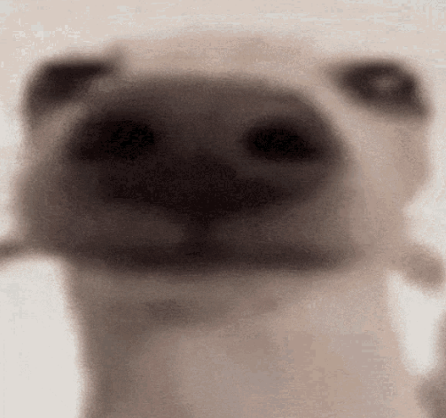

Farloom

Pending
About
Meet Farloom, a one-of-a-kind Chihuahua with a unique and unforgettable personality. At the age of 10, Farloom has a heart as big as their petite frame. This non-binary sweetheart is a mix of shyness and friendliness, making them a truly special companion.
Farloom's shyness can quickly turn into affection once they feel comfortable around you. They have a playful and silly side that will leave you in stitches with their goofy antics. Farloom's warm heart is evident in their friendly disposition, always ready for a sweet chat or a gentle pat.
Farloom also brings a touch of uniqueness to the mix, as they have characteristics that make them stand out. They may have some special needs and quirks, but these only add to their charm and make them an exceptional friend.
In terms of health, Farloom is spayed/neutered and up to date on shots. They do require some extra care when it comes to potty time, but it's a small effort to make for a companion as unique as Farloom.
If you're looking for a pet with a heart full of character and a touch of the extraordinary, consider opening your home to Farloom. This pink-pawed, teeny-tiny bundle of joy is eager to be a part of your life's adventures. Adopt Farloom and embark on a journey of love, laughter, and a little bit of extra care. Farloom is waiting for you to make their dreams come true.
Information
- Breed: Chihuahua
- Age: 10
- Gender: Non-binary
- Size: Small
- Color: Pink
- Shelter: Pet Projects
Characteristics
- Shy
- Affectionate
- Eepy
- Silly
- Goofy
- Autistic
- Friendly
Health
- Spayed/Neutered
- Up to date on shots
- Needs some extra care with potty time